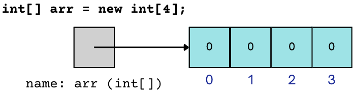

Array Basics#
Note
Above, you’ll see there’s a video titled CSE 121: Array Basics & Traversal Pattern Video Walkthrough. The video and the reading both have the same information! You’re not required to go through both the video and the reading, as the video just walks through the reading to help contextualize it!
It’s time to introduce you to your first data structure! We’ve been dealing with variables for several weeks now, which our first way of storing data or information. Now, we’re going to learn about arrays which will be able to store even more data than variables could!
üì¶ Picture this!#
When we first introduced variables, we suggested you think about variables as boxes with:
a name
a specific shape and size to be able to hold a specific type
the ability to hold a piece of data
Picture something like this:
Well, arrays sort of act like a bunch of variables that have been glued together… so we like to think of arrays as cubbies. These cubbies have:
a name
a specific length (number of compartments)
a specific type that each of its compartments can hold
compartments where each compartment has:
an index (like
Stringindexes, starting at index 0)the ability to hold a piece of data
We’d suggest something like this picture:

Don’t worry, we’ll talk about the syntax in a moment. But before we get there…
üìÑ Some Basics#
There are a few things you have to keep in mind when working with arrays.
The values that you can store inside of an array are referred to as elements of the array. In the array shown above, all of the elements in the array
arrhave a value equal to 0.Each compartment in the array has an index that refers to its position. Remember that programmers like to start counting at 0, so the first element is at index 0, the next at index 1, and so on (the indices are listed underneath the array in the diagram above).
Arrays can only hold values that share the same type. In the example above,
arris an array that holds allintvalues. If we tried to put something like theString"hello"or thedouble3.14159into it, Java would complain (with a compiler error).We have to specify how many elements we want the array to be able to hold (or its “length”) when we first create it. In the example above, the
4on the right hand side of the assignment operator dictates thatarrwith have space for 4 elements.
üèóÔ∏è Array Creation#
Take a closer look at the line of code to create an array that we had in the diagram above, and examine each of its parts.
The type - Just like any other variable, we first list the type of value it can hold. In this case, we are creating a variable that can store an array of integers.
The name - Again, just like other variables we need to give our variable a name: in this case,
arr.The array creation code - There are a few things to point out here. Notice that we’re using the keyword
newthat we’ve for creating different kinds of objects (e.g. Random, File, Scanner) before—it turns out arrays are objects too! We then repeat the type of the array (int[]) but list the length of the array (or number of compartments) we are creating between the square brackets ([]).
üèÉ ‚ÄúQuick Initialization‚Äù Syntax#
When you create an array using the syntax above, all of the elements are initialized to their “default values.” This default value depends on the type:
for
ints,0for
doubles,0.0for
booleans,falsefor
Strings (and other objects),null(more to come on this later!)
For many cases, this is exactly what you want! However, if you instead want to create an array and immediately store specific values, you can do that with a special “quick initialization” syntax where you put the values you want the array to hold inside of curly braces ({}). For example,
import java.util.*;
public class ArrayInitialization {
public static void main(String[] args) {
boolean[] arr1 = new boolean[4]; // [false, false, false, false]
boolean[] arr2 = {false, true, true, false}; // [false, true, true, false]
}
}
üß∞ Working with Arrays#
When working with arrays, it’s helpful to remember that they’re like a bunch of variables glued together. So dealing with an element at a specific index of the array is similar to how you would deal with an individual variable! Below you can see a comparison of how you might work with a variable (in declarations, assignment statements, increments, and in expressions) and how you might similarly work with a specific index of an array.
üìè Length#
One additional thing that you can ask about an array is its length, or how many elements it has space for. You can do this with <name of array>.length. Notice that there are no parentheses after “length” – this is because length isn’t a method, it’s something called a field, or instance variable. For now you can think of fields as data or values that a particular object keeps track of, and we’ll dig more into this concept in CSE 122! Take a look below for an example of asking for an array’s length.
public class ArrayLength {
public static void main(String[] args) {
double[] temps = {68.0, 74.3, 79.16, 82.5};
// get the length of array temps with temps.length
System.out.println("the length of the temps array is: " + temps.length);
}
}
üñ®Ô∏è Printing Arrays#
You may have noticed that, in all of the examples above, we never print out an array! Let’s take a look at what happens if we try the program below…
public class PrintArray {
public static void main(String[] args) {
double[] temps = {68.0, 74.3, 79.16, 82.5};
System.out.println("the length of the temps array is: " + temps.length);
System.out.println("temps array contents: " + temps);
}
}
You probably found that the output from this program was not what we were hoping for! Unfortunately we get this type of jumbled output when we try to print out arrays directly (it turns out it’s not complete gibberish, but it’s not incredibly helpful for our general purposes), but there is a way to print arrays out more nicely! Java has an Arrays utility (in the java.util package) class that provides a nice library of helpful methods that we can use with arrays. One of the most helpful methods in this library is the Arrays.toString() method! Try modifying the code above by:
Adding
import java.util.*;at the top of the program (which is where theArraysclass is located)Replacing line 5 in the code above with
System.out.println("temps array contents: " + Arrays.toString(temps));
and hit Run again! You should see some more helpful output :)